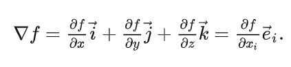
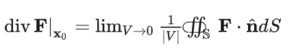

矢量分析
-

矢量分析在场论中非常重要，而三个基本算子（梯度、散度与旋度）是构成各种复杂关系式的基础，下面逐一介绍，应特别注意散度与旋度的基本定义与物理意义。梯度物理意义为：在某个场中，某点某物理参数增加最快的方向，梯度大小就是增加率。因此，梯度越大，增加越快。举个例子，我们站在山脚爬山时（此山只有一个山峰），我们迈步第一步的方向有无数个，若想走最短路程到达山顶，此时应沿梯度方向迈出，以此类推，直至到达山顶。
-

某点散度代表了该点向外的通量体密度，其物理意义可以理解为：定量给出向量场中任一点是否为源点或汇点。若某点散度等于0，则说明其通量为0，流进=流出；若某点散度大于0，说明流出>流进，相当于一个源点(source)；若某点散度小于0，说明流出小于流进，相当于一个汇点(sink）
-
这个式子代表：矢量场 F在p 点的旋度与单位向量的点积等于以此单位向量为外法线的无穷小曲面的环量面密度。注意线积分方向为逆时针；若为顺时针，前面应该加上负号。即旋度逆时针方向为正，反之为负。